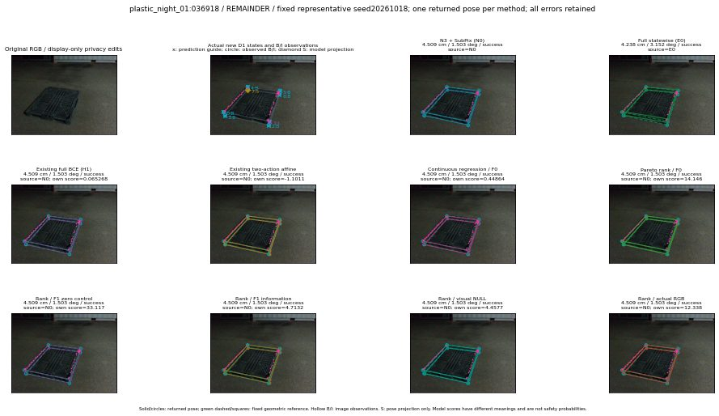

실선은 반환 자세, 초록 점선은 고정 기하 참조입니다. S는 영상 관측이 아닙니다. 점수는 모델별 의미가 다르며 보정된 안전 확률이 아닙니다. 개인정보 처리는 표시 사본에만 적용했습니다.
| 방법·seed | 위치 / 회전 / 공동성공 | 실제 출처 | 선택 후보 | 각 모델 자체 점수 |
|---|---|---|---|---|
| N0 | 4.509 cm / 1.503 deg / success | N0 | N/A | N/A |
| E0 | 4.238 cm / 3.152 deg / success | E0 | N/A | N/A |
| E0_REGENERATED | 4.238 cm / 3.152 deg / success | E0 | E0_REGENERATED | N/A |
| POSEFIX_SUBPIX_PF_ANCHOR | 6.495 cm / 1.844 deg / failure | OTHER | N/A | N/A |
| POSEFIX_SUBPIX_YOLO_ANCHOR | 6.134 cm / 1.83 deg / failure | OTHER | N/A | N/A |
| D1_H1_MLP_s20261018 | 4.509 cm / 1.503 deg / success | N0 | N0 | 0.06526771187782288 |
| D1_H1_MLP_s20261019 | 4.509 cm / 1.503 deg / success | N0 | N0 | -0.7171823978424072 |
| D1_H1_MLP_s20261020 | 4.509 cm / 1.503 deg / success | N0 | N0 | -0.5480494499206543 |
| D1_H1_PAIR_MLP_s20261018 | 4.509 cm / 1.503 deg / success | N0 | N0 | -1.7583198547363281 |
| D1_H1_PAIR_MLP_s20261019 | 4.509 cm / 1.503 deg / success | N0 | N0 | -1.2101023197174072 |
| D1_H1_PAIR_MLP_s20261020 | 4.509 cm / 1.503 deg / success | N0 | N0 | -0.7650049924850464 |
| D1_H1_PAIR_ROLE_AFFINE_s20261018 | 4.509 cm / 1.503 deg / success | N0 | N0 | -1.1010924577713013 |
| D1_H1_PAIR_ROLE_AFFINE_s20261019 | 4.509 cm / 1.503 deg / success | N0 | N0 | -0.8446885347366333 |
| D1_H1_PAIR_ROLE_AFFINE_s20261020 | 4.509 cm / 1.503 deg / success | N0 | N0 | -0.8329622745513916 |
| R_CONT_F0_s20261018 | 4.509 cm / 1.503 deg / success | N0 | N0 | 0.44864320755004883 |
| R_CONT_F0_s20261019 | 4.509 cm / 1.503 deg / success | N0 | N0 | 0.4839225113391876 |
| R_CONT_F0_s20261020 | 4.509 cm / 1.503 deg / success | N0 | N0 | 0.48693209886550903 |
| R_ORDER_F0_s20261018 | 4.509 cm / 1.503 deg / success | N0 | N0 | 14.146255493164062 |
| R_ORDER_F0_s20261019 | 4.509 cm / 1.503 deg / success | N0 | N0 | 16.292510986328125 |
| R_ORDER_F0_s20261020 | 4.509 cm / 1.503 deg / success | N0 | N0 | -9.90278148651123 |
| R_ORDER_F1_ZERO_s20261018 | 4.509 cm / 1.503 deg / success | N0 | N0 | 33.116600036621094 |
| R_ORDER_F1_ZERO_s20261019 | 4.509 cm / 1.503 deg / success | N0 | N0 | 39.58123779296875 |
| R_ORDER_F1_ZERO_s20261020 | 4.509 cm / 1.503 deg / success | N0 | N0 | 17.791414260864258 |
| R_ORDER_F1_s20261018 | 4.509 cm / 1.503 deg / success | N0 | N0 | 4.713166236877441 |
| R_ORDER_F1_s20261019 | 4.509 cm / 1.503 deg / success | N0 | N0 | 9.204766273498535 |
| R_ORDER_F1_s20261020 | 4.509 cm / 1.503 deg / success | N0 | N0 | 1.5390933752059937 |
| V_ORDER_NULL_s20261018 | 4.509 cm / 1.503 deg / success | N0 | N0 | 4.457653045654297 |
| V_ORDER_NULL_s20261019 | 4.509 cm / 1.503 deg / success | N0 | N0 | 3.989895820617676 |
| V_ORDER_NULL_s20261020 | 4.509 cm / 1.503 deg / success | N0 | N0 | 4.324138164520264 |
| V_ORDER_RGB_s20261018 | 4.509 cm / 1.503 deg / success | N0 | N0 | 12.33778190612793 |
| V_ORDER_RGB_s20261019 | 4.509 cm / 1.503 deg / success | N0 | N0 | 3.256305456161499 |
| V_ORDER_RGB_s20261020 | 4.509 cm / 1.503 deg / success | N0 | N0 | -7.708582878112793 |